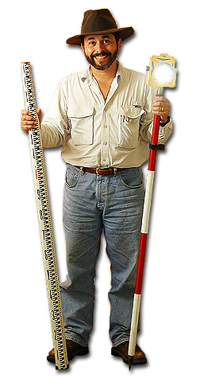

| 
Digital Photo by Cara Davis. |
|
| In the Spring of 2000, Dr. Mendoza submitted a research proposal to the CSU Research, Scholarship, and Creative Activity Awards Competition at CSU Monterey Bay. As a result of his submission -- titled "Archaeology, Multimedia and Online Resources for Old Mission San Juan Bautista" -- Dr. Mendoza was awarded $5,000.00 to undertake the hiring of six student assistants to produce an instructional courseware project intended to support Professor Mendoza's many teaching and research-related endeavors. Because little time or resources were available for some of the preliminary planning and expertise necessary for the undertaking in question, the assembled team found innovative solutions and undertook a considerable amount of problem-solving to bring the product to fruition. Some of the challenges and innovations undertaken will be documented in future installments on this portion of the site. |
|
To Be Continued...